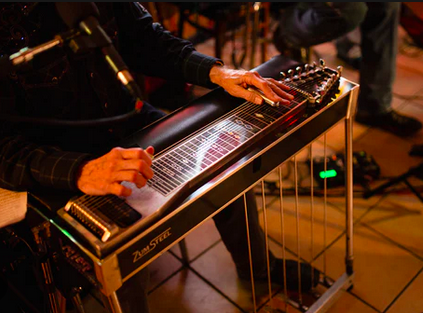

lyrics
I wanted to die, I'm just being honest
No longer afraid to say it out loud
So, I put my hair on your chest 'til I hear the answer
Love in motion seems to save me now
Love in motion, my heart's open
Thank you, thank you, I'm okay
'Cause you care, I made it through today
I once had a dream that shadows took over
(Tears were fallin' like rain)
I must've cried out, 'cause you were awake
(You're the only one who really cares what I say)
You turned on the light as you put me closer
(All I know is that no one loves me like you)
Love in motion seems to save me now
Love in motion, my heart's open
Thank you, thank you, I'm okay
'Cause you care, I made it through today
(Like you, like)
No one loves me like you (Like)
(Like) No-no-no-no (You)
No-no-no-no, no-no-no-no
No-no-no-no, (Like) no-no-no-no (You)
No-no-no-no, no-no-no-no-no, no
Love in motion, my heart's open
Thank you, thank you, I'm okay
'Cause you care, I made it through today
No-no-no-no
No-no-no-no, no-no-no-no
No-no-no-no, no-no-no-no
No-no-no-no, no-no-no-no-no
song/sound description
Opens with soft piano, singer sings in soft soprano voice. Some electronic elements come in at chorus. Singer does interesting things with voice here, jumping form one octave to the next (or maybe it's not a full octave, but if it's not, it's close).
The tempo picks up during chorus as the song continues then eventually goes back to a more delicate, softer place while the song fades out. Google describes the genre of this album as "art-pop/avant-pop" and it was released in 2022.
lyrics
Untie me, I've said no vows
The train is getting way too loud
I've gotta leave here, my girl, get on with my lonely life
Just leave the ring on the rail for the wheels to nullify
Until this turned in my head
I let you stay and you paid no rent
I spent 12 long months on the lam
That's enough sitting on the fence for the fear of breaking dams
I'd find a fatal flaw in the logic of love
And go out of my head
You love a sinking stone that'll never elope
So get used to the lonesome
Girl, you must atone some
Don't leave me no phone number there
It took me all of a year to put the poison pill to your ear
But now I stand on honest ground, on honest ground
You want to fight for this love, but honey, you cannot wrestle a dove
So baby, it's clear
You want to jump and dance, but you sat on your hands
And lost your only chance
Go back to your hometown, get your feet on the ground
And stop floating around
I found a fatal flaw in the logic of love
And went out of my head
You love a sinking stone that'll never elope
So get used to the lonesome
Girl, you must atone some
Don't leave me no phone number there
song/sound description
This song opens up with upbeat guitar strumming at a pace that's neither fast nor slow. It's got some country vibes, for sure, although I think this band is from the UK (whoops- just googled it and apparently they're from New Mexico).
Google describes this song's genre as alternative / indie / folk. The singer's tone is clear and declarative. Overall, the song has upbeat vibes without being frantic. This song was released in 2003.
It's possible they used one of these, which is probably why I get the "country vibes":

no lyrics
This song is instrumental only (no vocals).
song/sound description
Google doesn't list a genre for this one which sucks for me but I'm going to do my best. This song gives me jazzy, psychedelic vibes- kind of like you'd see it in a spy movie from the 70's. It's an instrumental song with a large band consisting of quite a few different instruments -- including brass instruments, guitar, bass, drums and probably more (for example, there's some plucking of some type of string instrument- I'm just not sure what specifically).
lyrics
Night seems to fall
I'll find a way
I'll find a way
To carry it all
You took me for a ride
And what can I say?
I'll find a way
To carry it all
Many's the time
When love seemed so fine
And many's the hour
It was so sweet
How did it get so sour?
I play the fool
Just for a day
I'll find a way
To carry it all
Many's the time
When love seemed so fine
And many's the hour
It was so sweet
How did it get so sour?
I play the fool
Just for a day
I'll find a way
To carry it all
To carry it all
song/sound description
This song opens up with soft guitar strumming along with some light guitar picking that comes in on top of that a few seconds later. Overall, the song is pretty mellow and a bit sad but also bittersweet and reflective.
Eventually another instrument comes in around the chorus and I couldn't quite figure out what instrument it was at first but it kind of sounds like an old piano in an echoey room.
The song consists of a singular person singing for the most part, with harmonizing vocals popping in every now and then. The pace is on the slower side, but not too slow (like, it could be slower).
no lyrics
This song is instrumental only (no vocals).
song/sound description
This is an instrumental interlude (which is a musical composition inserted between the parts of a longer composition... thanks, Merriam-Webster) that starts off with dramatic strings that kind of build up like a tornado forming.
The song has a cinematic feel, in my opinion, like you could find it on the soundtrack of a movie. It's dramatic and theatrical and it's performed by an orchestra consisting of string instruments and some other instruments- I'm honestly not sure if they are woodwind or brass instruments but it's got to be one of the two.
lyrics
You're the reason I'm a-ridin' around on recapped tires
And you're the reason I'm hangin' our clothes outside on wires
And you're the reason our kids are ugly, little darlin'
Ah, but looks ain't everythin',
and money ain't everythin'
But I love you just the same
You're the reason I've changed to beer from soda pop
And you're the reason I never get to go to the beauty shop
You're the reason our kids are ugly, little darlin'
Ah, but looks ain't everythin',
and money ain't everythin'
But I love you just the same
I guess that we won't ever have everything we need
'Cause when we get ahead it's got another mouth to feed
And that's the reason that my good looks and my figure is gone
And that's the reason that I ain't got no hair to comb
And you're the reason our kids are ugly, little darlin'
Ah, but looks ain't everythin',
and money ain't everythin'
But I love you just the same
Conway, why in the devil don't you go and shave
And put on a clean pair of pants?
But Loretta, look at yourself
Now I wish you'd take them curlers out of your hair
And go put on a little makeup
And get out of that housecoat before supper
Ha, well let me tell you something, Conway
Considerin' everything that I went through today
I look like a movie star
Yeah, Ruth Buzzie
Thank you
Besides that, all our kids took after your part of the family, anyway
Oh, they did, huh? What about the ones that's bald?
[laughter] Well, I guess you might say they took after me
[more laughter]
song/sound description
lyrics
I saw it
Hit the ground
But no one
Was around
Carrying the dummy and always the same as you
Same as you
Ancient wallpaper, I can walk and talk and sing
straight out
As you
As you
There were ticking bloody watches in our hands
Poured into the soil we written letters
Have another heart attack and folding up our chairs
Open up your mouth, where you want to go?
I can hardly recognize the shapes
The shapes
Wandering through Chinatown, white strands under
artificial heat
Artificial heat
Slip down the middle with some small teeth
Alright
song/sound description
lyrics
I could never build the ether
Or the grass overgrown
I could never build the river
With a mouthful of foam
I could never build the winter
With her cold tears of glitter
I've been listening to the red oak
And the acorn she cries
Listening to the white birch
And the paper she dries
I've been listening to the frog's joke
Listening to the firesmoke
I can never tell you now
What I'd often said before
Because promise is a pendulum
Just swinging at the door
And I'm not saying I'm not jealous
Or scared anymore
I'm just saying
I could never build a rainbow
Or any kind of flower
I could never make a sparrow
Or a meteor shower
I could never build an earthworm
Could never make the earth turn
I've been listening to the laughing
Of the fox down the trail
I've been clasping to the
listening of the moss to the snail
The shimmer of the beech leaves
As the wind does a big sneeze
I could never tell you now
What I'd often said before
Because promise is a pendulum
Just swinging at the door
And I'm not saying I'm not jealous
Or scared anymore
I'm just saying
I could never build the shadow
Between your cheek and your eye
I could never make a freckle or the warm breath you sigh
In the canopy of lashes
With the softness of ashes
I've been listening to the memory
The way that it was
Listening to the echo of whys and because
Listening to the echo
Telling me to let go
I could never tell you now
What I'd often said before
Because promise is a pendulum
Just hanging at the door
And I'm not saying I'm not jealous
Or scared anymore
I'm just saying
Saying
song/sound description
lyrics
Get down
Pop, pop, pop muzik
Pop, pop, pop muzik
Radio, video
Boogie with a suitcase
Go living in a disco
Forget about the rat race
Let's do the milkshake
Selling like a hot cake
Try some, buy some
Fe, fi, foe, fum
Talk about
Pop muzik
Talk about
Pop muzik
Pop muzik
(Jitterbug) Pop muzik
Pop, pop, pop muzik
Pop, pop, pop muzik
I wanna dedicate it
(Pop, pop, shoo wop) Everybody made it
(Shoobie, doobie, do wop) Infiltrate it
(Pop, pop, shoo wop) Activate it
New York, London, Paris, Munich
Everybody talk about pop muzik
Talk about
Pop muzik
Talk about
Pop muzik
Pop, pop, pop muzik
Pop, pop, pop muzik
Singing in the subway
Shovel with a shoeshine
Mix me a molotov
I'm on the headline
Wanna be a gun slinger
Don't be a rock singer
Eenie, meenie, mienie, mo
Whichever way you wanna go
Talk about
Pop muzik
Talk about
Pop muzik
Lyin' in the tree
(Pop, pop, shoo wop) Einie meanie
(Shoobie, doobie, do wop) Right in between it
(Pop, pop, shoo wop) You know what I'm meaning
Hit it
Now you know what I say
Talk about
Pop muzik
Everybody talk about
Pop muzik
Pop, pop, pop muzik
Pop, pop, pop muzik
All around the world
Wherever you are
Dance in the street
Anything you like
Do it in the car
In the middle of the night
La, la, la, la, la, la, la, la, la, la
La, la, la, la, la, la, la, la, la, la
Dance in the supermarket
Dig it in the fast lane
Listen to the countdown
They're playing our song again
I can't get jumping jack
I wanna hold get back
Moonlight muzak
Nick nack paddy wack
Talk about
Pop muzik
Talk about
Pop muzik
It's all around you
(Pop, pop, shoo wop) I wanna surround you
(Shoobie, doobie, do wop) It's all around you
(Pop, pop, shoo wop) Hit it
Pop muzik
(Jitterbug) Pop muzik
Pop, pop, pop muzik
Pop, pop, pop muzik
Pop, pop, pop muzik
Pop, pop, pop muzik
Pop, pop, pop muzik
Pop, pop, pop muzik
Pop, pop, pop muzik
Pop, pop, pop muzik
Pop, pop, pop muzik
Pop, pop, pop muzik
New York, London, Paris, Munich
Everybody talk about, hm, pop muzik
Shoobie, doobie, do wop
Pop, pop, shoo wop
Shoobie, doobie, do wop
Pop, pop, shoo wop
New York, London, Paris, Munich
Everybody talk about pop muzik
Talk about
Pop muzik
Talk about pop muzik
Pop, pop, pop muzik
Pop, pop, pop muzik
Now, listen
Talk about (pop, pop, pop muzik)
Talk about (pop, pop, pop muzik)
Talk about the fever
Pop, pop, pop muzik
Pop, pop, pop muzik
New York, London, Paris, Munich
Everybody talk about pop muzik
Talk about
Pop muzik
Talk about pop muzik
Pop, pop, pop muzik
Pop, pop, pop muzik
Now, listen
Talk about (pop, pop, pop muzik)
Talk about (pop, pop, pop muzik)
Talk about the fever
Pop, pop, pop muzik
Pop, pop, pop muzik
Do you remit?
Loud and clear-cle-cle-cle-clear
song/sound description
lyrics
Across the evening sky, all the birds are leaving
But how can they know it's time for them to go?
Before the winter fire, I will still be dreaming
I have no thought of time
For who knows where the time goes?
Who knows where the time goes?
Sad, deserted shore, your fickle friends are leaving
Ah, but then you know it's time for them to go
But I will still be here, I have no thought of leaving
I do not count the time
For who knows where the time goes?
Who knows where the time goes?
And I am not alone while my love is near me
I know it will be so until it's time to go
So come the storms of winter and then the birds in spring again
I have no fear of time
For who knows how my love grows?
And who knows where the time goes?
song/sound description
lyrics
Last dance
Last chance for love
Yes, it's my last chance
For romance tonight
I need you by me
Beside me to guide me
To hold me, to scold me
'Cause when I'm bad, I'm so, so bad
So let's dance the last dance
Let's dance the last dance
Let's dance this last dance tonight
Last dance
Last chance for love
Yes, it's my last chance
For romance tonight
Oh, oh, I need you by me
Beside me to guide me
To hold me, to scold me
'Cause when I'm bad, I'm so, so bad
So let's dance the last dance
Let's dance the last dance
Let's dance the last dance tonight
Yeah, oh, oh, oh, yeah
Will you be my Mr. Right?
Can you fill my appetite?
I can't be sure that you're the one for me
All that I ask is that you dance with me
Dance with me, dance with me, yeah, yeah
I need you by me
Beside me to guide me
To hold me, to scold me
'Cause when I'm bad, I'm so, so bad
So let's dance the last dance
Let's dance the last dance
Let's dance the last dance
Let's dance the last dance tonight
Oh, oh, I need you by me
Beside me to guide me
To hold me, to scold me
'Cause when I'm bad, I'm so, so bad
So, come on, baby
Dance that dance
Ha! Come on, baby
Dance that dance
Come on, baby
Last dance tonight, yeah
song/sound description
lyrics
It's the end, friend of mine
It's the end, friend of mine
time is over where we could simply say I love you
Now you opened the door
Leave me crying
Trying to embrace you again
Trying to face this damn situation man,
I can't
It's the end, friend of mine
It's the end, sweet friend of mine
dear friend, I cannot tell the reasons why we started well
Good time, give me some wine when you open the door
You seem hurt, don't try to speak a word to me
What on earth could really go wrong with you and me?
Yet its the end, friend of mine
It's the end, sweet friend of mine
time seems to be over where we could simply say I love you
Now you opened the door
I feel cold
Wakened, I hold you in my arms
Told you that life is short but love is old
It's the end, friend of mine
It's the end, sweet friend
song/sound description